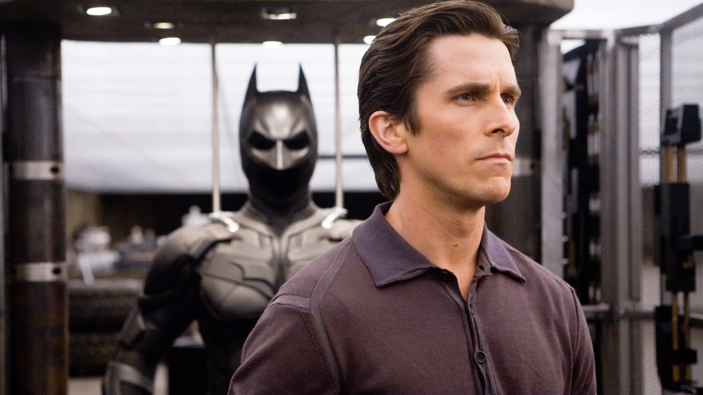
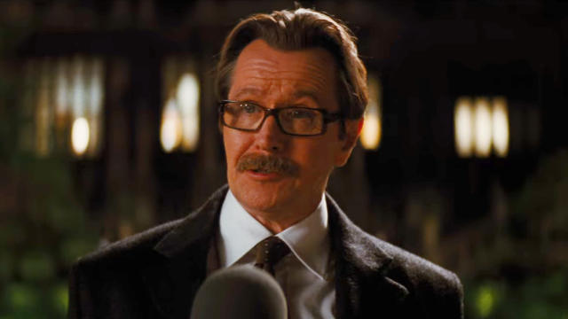

A gang of masked criminals rob a mafia-owned bank in Gotham City, betraying and killing
each
other until the sole survivor,the Joker, reveals himself as the mastermind and escapes with the
money.
The vigilante Batman, district attorney Harvey Dent, and police lieutenant Jim Gordon ally to eliminate Gotham's
organized crime. Batman's true identity, the billionaire Bruce Wayne, publicly supports Dent as Gotham's
legitimate
protector, as Wayne believes Dent's success will allow Batman to retire, allowing him to romantically pursue his
childhood friend Rachel Dawes, despite her relationship with Dent.
Gotham's mafia bosses gather to discuss protecting their organizations from the Joker, the police, and Batman. The
Joker interrupts the meeting and offers to kill Batman for half of the fortune their accountant, Lau, concealed
before fleeing to Hong Kong to avoid extradition. With the help of Wayne Enterprises CEO Lucius Fox, Batman finds
Lau in Hong Kong and returns him to the custody of Gotham police. His testimony enables Dent to apprehend the crime
families. The bosses accept the Joker's offer, and he kills high-profile targets involved in the trial, including
the judge and police commissioner. Although Gordon saves the mayor, Joker threatens that his attacks will
continue until Batman reveals his identity. He targets Dent at a fundraising dinner and throws Rachel
out of a
window, but Batman rescues her.
Watch The Movie Here!!!

Starring :
Heath Ledger As Joker

Heath Andrew Ledger (4 April 1979 – 22 January 2008) was an Australian actor. After playing roles in several
Australian television and film productions during the 1990s, he moved to the United States in 1998 to further
develop his film career. His work consisted of 20 films in a variety of genres, including 10 Things I Hate About You
(1999), The Patriot (2000), A Knight's Tale (2001), Monster's Ball (2001), Casanova (2005), Lords of Dogtown (2005),
Brokeback Mountain (2005), Candy (2006), I'm Not There (2007), The Dark Knight (2008), and The Imaginarium of Doctor
Parnassus (2009), the latter two of which were posthumously released.[1] He also produced and directed music videos
and aspired to be a film director.
For his portrayal of Ennis Del Mar in Ang Lee's Brokeback Mountain, he received nominations for the BAFTA Award,
Screen Actors Guild Award, Golden Globe Award and the Academy Award for Best Actor, becoming the eighth-youngest
nominee in the category at that time.[4] In 2007, he played a fictional actor, Robbie Clark, one of six characters
embodying aspects of Bob Dylan's life and persona in Todd Haynes' I'm Not There.
Ledger died in January 2008 from an accidental overdose as a result of prescription drug abuse. A few
months before his death, he finished filming his role as the Joker in The Dark Knight; the performance brought him
praise and popularity, and numerous posthumous awards, including the Academy Award for Best Supporting Actor, the
Golden Globe Award for Best Supporting Actor, and the BAFTA Award for Best Supporting Actor.
Aaron Eckhart as Harvy Dent/Two-Face

Aaron Edward Eckhart (born March 12, 1968) is an American actor. Born in Cupertino, California, Eckhart moved to the
United Kingdom at an early age. He began his acting career by performing in school plays, before moving to Australia
for his high school senior year. He left high school without graduating, but earned a diploma through a professional
education course, and then graduated from Brigham Young University (BYU) in Utah, U.S., in 1994 with a Bachelor of
Fine Arts degree in film.
As an undergraduate at BYU, Eckhart met director and writer Neil LaBute, who cast Eckhart in several of LaBute's
original plays. Five years later Eckhart made a debut as an unctuous, sociopathic womanizer in LaBute's black comedy
film In the Company of Men (1997), followed by appearances in three more of the director's films.
Eckhart gained wide recognition as George in Erin Brockovich (2000), and, in 2006, he received a Golden Globe
nomination for his portrayal of Nick Naylor in Thank You for Smoking. In 2008 he played a major role in Christopher
Nolan's blockbuster Batman film The Dark Knight as District Attorney Harvey Dent / Two-Face.
He went on to appear in Love Happens, Rabbit Hole, Battle: Los Angeles, The Rum Diary, Olympus Has Fallen and its
sequel, I, Frankenstein, Sully, and Midway.
Christian Bale as Bruce Wayne
Christian Charles Philip Bale (born 30 January 1974) is an English actor. Known for his
versatility and physical
transformations for his roles, he has been a leading man in films of several genres. He has received various
accolades, including an Academy Award and two Golden Globe Awards. Forbes magazine ranked him as one of the
highest-paid actors in 2014.
Born in Wales to English parents, Bale had his breakthrough role at age 13 in
Steven Spielberg's 1987 war film
Empire of the Sun. After more than a decade of performing in leading and supporting roles in films, he gained wider
recognition for his portrayals of serial killer Patrick Bateman in the black comedy American Psycho (2000) and the
title role in the psychological thriller The Machinist (2004). In 2005, he played superhero Batman in Batman Begins
and again in The Dark Knight (2008) and The Dark Knight Rises (2012), garnering acclaim for his performance in the
trilogy, which is one of the highest-grossing film franchises.
Bale continued in starring roles in a range of
films outside his work as Batman, including the period drama The
Prestige (2006), the action film Terminator Salvation (2009), the crime drama Public Enemies (2009), the epic film
Exodus: Gods and Kings (2014) and the superhero film Thor: Love and Thunder (2022). For his portrayal of boxer Dicky
Eklund in the 2010 biographical film The Fighter, he won an Academy Award and a Golden Globe Award. Further Academy
Award and Golden Globe Award nominations came for his work in the black comedy American Hustle (2013) and the
biographical dramedies The Big Short (2015) and Vice (2018). His performances as politician Dick Cheney in Vice and
race car driver Ken Miles in the sports drama Ford v Ferrari (2019) earned him a second win and a fifth nomination
respectively at the Golden Globe Awards.
Gary Oldman as James Gorden
Gary Leonard Oldman (born 21 March 1958) is an English actor and filmmaker. Known for his
versatility and intense
acting style, he has received various accolades, including an Academy Award, a Golden Globe Award, and three
British Academy Film Awards. His films have grossed over $11 billion worldwide, making him one of the
highest-grossing actors of all time.
Oldman began acting in theatre in 1979 and made his film debut in
Remembrance (1982). He appeared in London's
Royal Court and was a member of the Royal Shakespeare Company, with credits including Cabaret, Romeo and Juliet,
Entertaining Mr Sloane, Saved, The Country Wife and Hamlet. He rose to prominence in British film with his
portrayals of Sid Vicious in Sid and Nancy (1986), Joe Orton in Prick Up Your Ears (1987) and Rosencrantz in
Rosencrantz & Guildenstern Are Dead (1990), and gained recognition for his role in the television film The Firm
(1989). Regarded as a member of the "Brit Pack",[2] he achieved greater recognition as a New York gangster in
State of Grace (1990), Lee Harvey Oswald in JFK (1991) and Count Dracula in Bram Stoker's Dracula (1992).
Oldman portrayed villainous roles in True Romance (1993), Léon: The Professional (1994), The Fifth Element
(1997), Air Force One (1997) and The Contender (2000). He has also played franchise roles such as Sirius Black
in the Harry Potter series, James "Jim" Gordon in The Dark Knight Trilogy (2005–2012), Lord Shen in Kung Fu
Panda 2 and Dreyfus in Dawn of the Planet of the Apes (2014). He won the Academy Award for Best Actor for his
role as Winston Churchill in Darkest Hour (2017), and was nominated for his portrayals of George Smiley in
Tinker Tailor Soldier Spy (2011) and Herman J. Mankiewicz in Mank (2020).
Oldman also wrote and directed the film Nil by Mouth (1997). Since 2022, he has starred in the Apple TV+ series
Slow Horses. He also earned a Primetime Emmy Award nomination for his role on the NBC sitcom Friends in 2001. He
has also appeared in music videos for David Bowie, Guns N' Roses and Annie Lennox.
Michael Caine as Alfred Pennyworth

Sir Michael Caine CBE (born Maurice Joseph Micklewhite; 14 March 1933) is a retired English actor.[2] Known for his
distinctive Cockney accent,[3] he has appeared in more than 160 films over a career that spanned eight decades and
is considered a British film icon.[4][5] He has received numerous awards including two Academy Awards, a BAFTA
Award, three Golden Globe Awards, and a Screen Actors Guild Award. As of 2017, the films in which Caine has appeared
have grossed over $7.8 billion worldwide.[6] Caine is one of only five male actors to be nominated for an Academy
Award for acting in five different decades.[nb 1] In 2000, he received a BAFTA Fellowship and was knighted by Queen
Elizabeth II.
Often playing a Cockney, Caine made his breakthrough in the 1960s with starring roles in
British films such as Zulu
(1964), The Ipcress File (1965), The Italian Job (1969), and Battle of Britain (1969). During this time he
established a distinctive visual style wearing thick horn-rimmed glasses combined with sharp suits and a laconic
vocal delivery; he was recognised as a style icon of the 1960s.[7][8][9] He solidified his stardom with roles in Get
Carter (1971), The Last Valley (1971), The Man Who Would Be King (1975), The Eagle Has Landed (1976), and A Bridge
Too Far (1977).
Caine received two Academy Awards for Best Supporting Actor for his roles as Elliot in Woody
Allen's comedy Hannah
and Her Sisters (1986), and as Dr. Wilbur Larch in Lasse Hallström's drama The Cider House Rules (1999). His other
Oscar-nominated films include Alfie (1966), Sleuth (1972), Educating Rita (1983), and The Quiet American (2002).
Other notable performances include in the films California Suite (1978), Dressed to Kill (1980), Mona Lisa (1986),
Little Voice (1998), Quills (2000), Children of Men (2006), Harry Brown (2009), and Youth (2015).
Caine is
also known for his performance as Ebenezer Scrooge in The Muppet Christmas Carol (1992), and for his
comedic roles in Dirty Rotten Scoundrels (1988), Miss Congeniality (2000), Austin Powers in Goldmember (2002), and
Secondhand Lions (2003). Caine portrayed Alfred Pennyworth in Christopher Nolan's Batman trilogy (2005–2012). He has
also had roles in five other Nolan films: The Prestige (2006), Inception (2010), Interstellar (2014), Dunkirk
(2017), and Tenet (2020). He announced his retirement from acting in October 2023, with his final film being The
Great Escaper, which came out in the same month.
Story by : David S. Goyer.
Based on : Characters appearing in comic books published by DC Comics.
Produced by :Charles Roven, Emma Thomas, Christopher Nolan
Starring :Christian Bale, Michael Caine, Heath Ledger, Gary Oldman, Aaron Eckhart, Maggie Gyllenhaal, Morgan
Freeman.
Cinematography : Wally Pfister.
Edited by :Lee Smith.
Music by :Hans Zimmer, James, Newton Howard
Production companies :Warner Bros Pictures, Legendary Pictures, Syncopy
Directed by :Christopher Nolan
Release date : July 25, 2008.
Running time :152 minutes.
Language : English.
Budget : $185 million.
Box office : $1.006 billion.